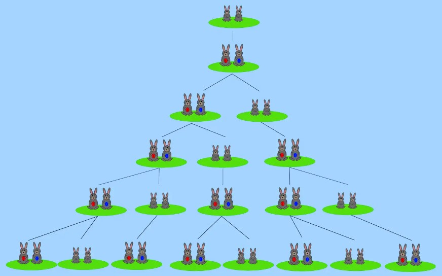

Bonjour cher 'friend', dans notre site nous vous aidons de bien comprendre et savoir tout les informations sur la suite
de Fibonacci , et pourquoi ils ont l'appelée "la fascinante suite"?.Tous ça nous allons le découvrire ensemble.
La suite de Fibonacci est une suite de nombres dans laquelle tout nombre est égal à la somme des deux précédents. Il suffit de prendre deux nombres de départ. Les ajouter donne le troisième, puis le deuxième + le troisième donne le quatrième et ainsi de suite.Dans toute suite de Fibonacci le rapport des deux derniers nombres(le plus grand / le plus petit), tend vers la valeur 1,61803..., le nombre d'or.
Cliquez sur le bouton "SUITE DE FIBONACCI" pour lister la suite de Fibonacci du premier élément jusqu'au N ième élément
(Il est favorable de ne pas choisir une valeur trés grand de N pour tester )
1- La suite permet de comprendre la construction de la vie ,On la retrouve dans le corps humain,
dans la nature en général
Lien de 1ervideo.
2- La suite de fibonacci est un outil pour faire des prédictions mathématiques.
Par exemple: quand on prend l’étude d’une population de lapins, on voit que ça permet de prédire quand on aura un nombre donné de lapins.

3- La suite de Fibonacci peut servir à créer des projets artistiques harmonieux
Lien de 2emevideo.
Ecouter ce audio : (Fibonacci π 1.618 no piano)
Pour bien comprendre l'importance de cette suite vous devez voir le video au dessous